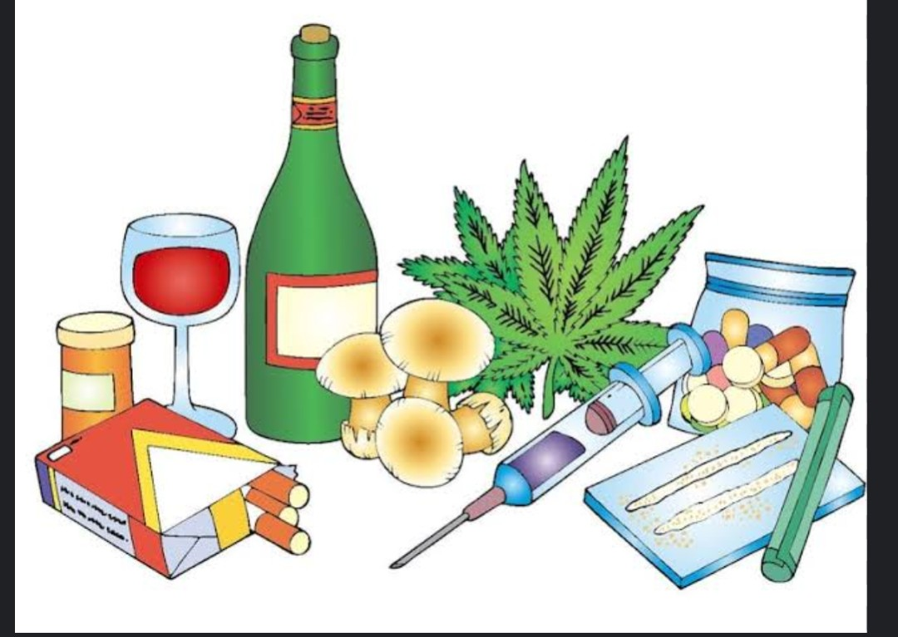
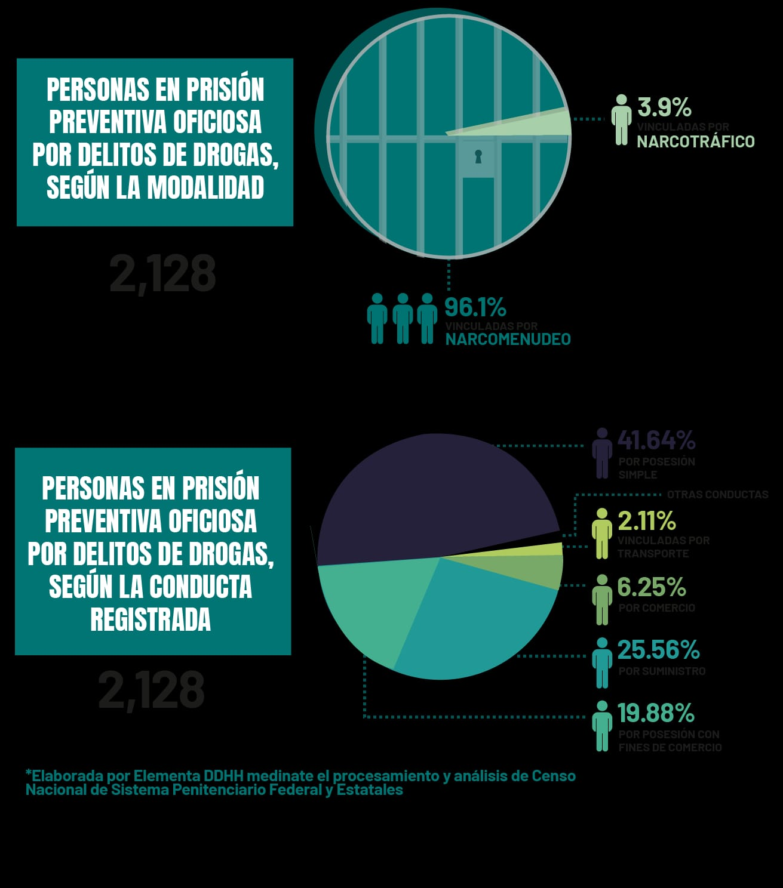

Prevención del uso de drogas
En la actualidad, el consumo de drogas representa uno de los principales desafíos para la salud pública y el bienestar social. Las drogas no solo afectan la salud física y mental de quienes las consumen, sino que también impactan negativamente en sus relaciones familiares, su rendimiento académico o laboral y su entorno en general. La prevención del consumo de sustancias psicoactivas es, por tanto, una tarea fundamental que involucra a toda la sociedad: desde las instituciones educativas y los gobiernos, hasta las familias y los medios de comunicación.
Aprender cómo prevenir¿Qué son las drogas?
Las drogas son sustancias que, al entrar en el cuerpo, pueden cambiar la forma en que funciona el cerebro y el cuerpo. Algunas drogas pueden ser legales, como los medicamentos recetados por un doctor o el alcohol (para adultos), y otras son ilegales, como la marihuana (en algunos países), la cocaína o el éxtasis. Aunque algunas drogas pueden usarse para tratar enfermedades, cuando se usan sin necesidad médica o de manera incorrecta, pueden causar graves problemas de salud. Pueden afectar el pensamiento, las emociones, el comportamiento y hasta dañar órganos como el corazón, el hígado o el cerebro. El uso de drogas también puede causar adicción, que es cuando una persona no puede dejar de consumirlas aunque le hagan daño. Por eso, es importante aprender sobre las drogas y saber cómo cuidarnos para tomar decisiones saludables
Efectos secundarios
Las drogas pueden tener efectos secundarios graves y potencialmente mortales:
- Náuseas y vómitos
- Dolor de cabeza
- Problemas cardíacos y respiratorios
- Ansiedad y cambios de humor

Tipos de drogas
Las drogas se pueden clasificar de diferentes maneras, pero una forma común de agruparlas es según los efectos que tienen en el cuerpo y la mente. Estos son los principales tipos: 1. Drogas estimulantes Aceleran el funcionamiento del cerebro y del cuerpo. Ejemplos: cafeína, nicotina, cocaína, anfetaminas. Efectos: aumento de energía, disminución del sueño y del apetito. 2. Drogas depresoras Disminuyen la actividad del sistema nervioso. Ejemplos: alcohol, tranquilizantes, inhalantes. Efectos: relajación, sueño, lentitud en el pensamiento y movimiento. 3. Drogas alucinógenas Alteran la percepción de la realidad. Ejemplos: LSD, hongos alucinógenos, éxtasis. Efectos: ver o escuchar cosas que no existen, confusión. 4. Drogas opioides Son sustancias muy fuertes que alivian el dolor, pero pueden causar adicción rápidamente. Ejemplos: morfina, heroína, fentanilo. Efectos: somnolencia, sensación de placer, riesgo de sobredosis. 5. Drogas legales e ilegales Algunas drogas, como el alcohol y el tabaco, son legales para adultos, aunque también pueden causar daño. Otras, como la cocaína o la marihuana (en algunos países), son ilegales. Las drogas se agrupan según sus efectos:
- Estimulantes: cafeína, nicotina, cocaína.
- Depresoras: alcohol, tranquilizantes.
- Alucinógenas: LSD, éxtasis.
- Opioides: morfina, heroína.
Estadísticas en México
| Droga | Porcentaje |
|---|---|
| Alcohol | 71.2% |
| Tabaco | 23.4% |
| Marihuana | 12.4% |
| Cocaína | 2.5% |
| Anfetaminas | 1.4% |
Fuente: SISVEA y OMTAD
Prevención
La prevención busca evitar el consumo y ayudar a quienes ya lo hacen. Es clave educar, desarrollar habilidades personales, y contar con apoyo familiar y escolar. La prevención del uso de drogas es muy importante para proteger la salud y el bienestar de las personas, especialmente de los niños, niñas y adolescentes. Su objetivo principal es evitar que las personas comiencen a consumir drogas y ayudar a quienes ya lo hacen a dejar, de hacerlo. Las principales características de una buena prevención son: Educación clara y veraz: Es fundamental conocer qué son las drogas, cómo afectan al cuerpo y a la mente, y cuáles son sus consecuencias. Recibir esta información ayuda a tomar decisiones responsables Desarrollo de habilidades personales: Aprender a decir .no , saber cómo enfrentar la presión de otros, mejorar la autoestima y manejar las emociones son herramientas que ayudan a mantenerse alejados del consumo. . Apoyo de la familia y la escuela: Cuando la familia se comunica bien y la escuela ofrece un ambiente seguro, es más fácil evitar los riesgos.
 Volver al inicio
Volver al inicio